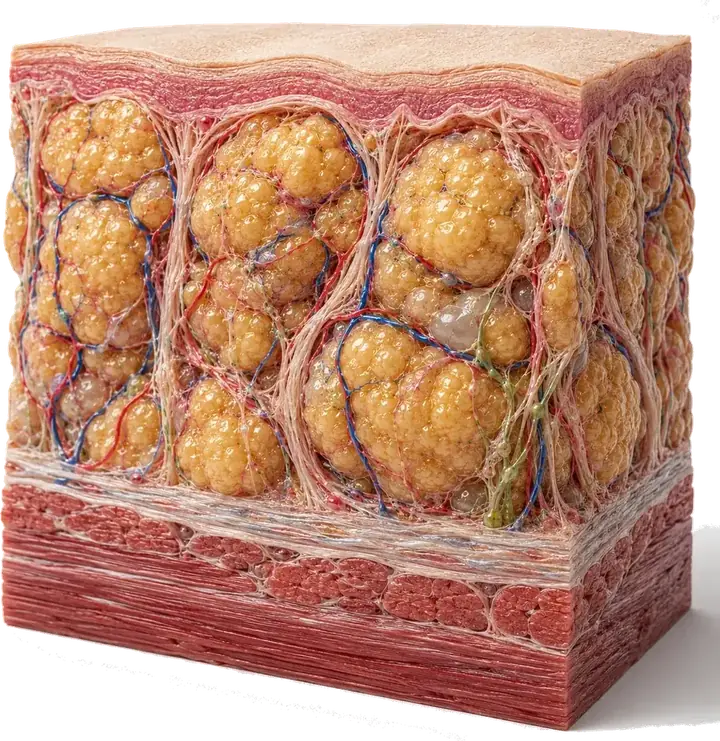

Información clara y confiable sobre el lipedema, la insuficiencia venosa y el cuidado de tus piernas. Contenido revisado por nuestro equipo médico.

Natación, caminatas y bici de baja intensidad: te contamos qué ejercicio suele ir mejor con el lipedema y por qué el agua ayuda tanto.

Son dos condiciones distintas que a veces se confunden o incluso conviven: las señales clave para diferenciarlas y cuándo pedir una valoración.

Por qué duele el lipedema, qué lo empeora en el día a día y qué manejo conservador puede ayudarte a sentirte mejor.
Por qué el lipedema no responde a la dieta como la obesidad común, y qué combinación de hábitos, compresión y manejo profesional sí puede ayudarte.
De la etapa 1 a la 4: cómo cambian la piel y el tejido en el lipedema, y cuándo pedir ayuda especializada.
Descubre las señales que ayudan a diferenciar el lipedema de la simple retención de líquidos.
Conoce qué es el lipedema, en qué se diferencia de la obesidad y qué puedes hacer al respecto.

Por qué aparecen las manchas oscuras en los tobillos y qué relación tienen con tus venas.

Descubre cuándo el picor en las piernas puede ser una señal circulatoria, qué otras causas existen y cuándo conviene consultar a un especialista vascular.

Te contamos en qué consiste la escleroterapia, cómo es el procedimiento y qué esperar durante la recuperación.
Por qué la bipedestación prolongada afecta la circulación y qué hábitos prácticos ayudan al cuidado de piernas de pie durante tu turno.
Qué es la trombosis venosa, sus factores de riesgo y las señales que indican que debes ir a urgencias, no a una cita.
Descubre por qué aparecen los calambres en las piernas al dormir, cuándo pueden tener relación con la circulación y cómo prevenirlos.
Qué síntomas de insuficiencia venosa conviene vigilar y cuándo conviene pedir una valoración.
Descubre para qué sirven las medias de compresión, qué grado y talla elegir, y qué precauciones tener antes de usarlas.

Por qué aparecen las várices en el embarazo, qué medidas seguras puedes tomar y cuándo consultar sin demora.
Descubre las causas circulatorias y no circulatorias de la pesadez en las piernas, y cuándo conviene consultar.
Te explicamos qué es el eco doppler venoso, cómo se hace y qué puede detectar en tus piernas.
Casi siempre son inofensivas, pero te contamos por qué aparecen, cuándo consultar y qué tratamientos existen hoy.
Esas venas dilatadas suelen ser señal de un problema de circulación. Te explicamos por qué aparecen y cómo se tratan hoy sin cirugía.
Muchas personas conviven con piernas pesadas e hinchadas creyendo que es normal. Te explicamos cuándo sí conviene revisarlo.

¿Tienes dudas sobre tus piernas?
Agenda una valoración con eco doppler y sal de dudas con acompañamiento profesional.